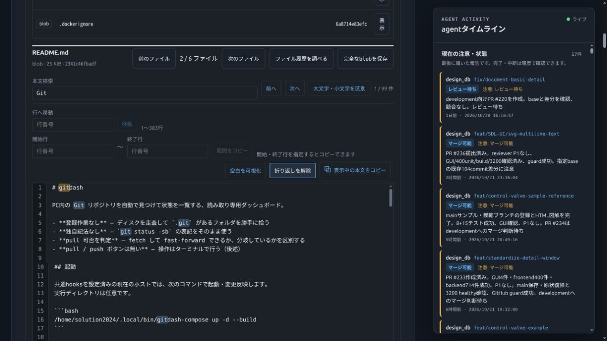
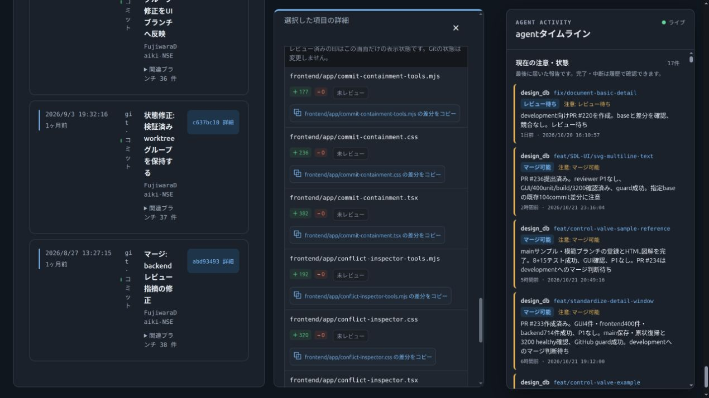

今回の開始時点を30点として再評価。機能追加14件 × 5点 = 70点、最終100点。これは指定された加点基準による達成であり、客観的な品質保証ではありません。検索のオプションやレビュー進捗など、同じ目的の操作はまとめて1件とし、CSS調整・ページング・テスト・内部実装は重複加点していません。高速化の加点はありません。
| # | 改善 | 分類・点数 | ユーザー価値と範囲 |
|---|---|---|---|
| 1 | ファイル種別の絞り込み | 機能追加 +5 | 通常ファイル・ディレクトリ・symlink・gitlinkをGitのmode/typeで選択できる。 |
| 2 | ファイル一覧の並べ替え | 機能追加 +5 | パス昇順・降順・種別順で取得済み一覧を整理できる。 |
| 3 | 表示パスのコピー | 機能追加 +5 | 調査対象パスをJSON文字列で1行1件コピーし、改行を含むパスも区別できる。 |
| 4 | 固定版ファイル一覧のCSV保存 | 機能追加 +5 | 表示対象のpath・kind・mode・objectと固定コミットを表計算や調査記録に保存できる。 |
| 5 | 前後ファイルへの連続移動 | 機能追加 +5 | 現在の絞り込みと表示順に沿って本文を順に調べられる。 |
| 6 | 本文検索と一致箇所の移動 | 機能追加 +5 | 文字列検索、ハイライト、前後移動、大文字小文字の区別をひとつの検索機能として加点。 |
| 7 | 行番号指定で本文へ移動 | 機能追加 +5 | 有効な行番号にフォーカスを移し、初期300行の範囲を超えても該当行を表示する。 |
| 8 | 本文の行範囲コピー | 機能追加 +5 | 開始・終了行を明示し、CRLFを含めた原文をコピーする。無効な範囲は使用不可。 |
| 9 | 本文の空白可視化 | 機能追加 +5 | スペースとタブを識別してインデントを調べる。コピーする原文は保持する。 |
| 10 | 本文の長い行の折り返し | 機能追加 +5 | 長い設定行やドキュメントを横スクロールせずに読める。 |
| 11 | 差分ファイルの並べ替え | 機能追加 +5 | 元順・パス順・変更行数順でレビューする順番を選択できる。 |
| 12 | 差分の内容種別フィルター | 機能追加 +5 | テキスト変更とバイナリを分けて確認できる。メタデータのみの変更はすべてで保持する。 |
| 13 | 表示対象のパッチ保存 | 機能追加 +5 | フィルター対象だけを元の順序・生パッチを保持して書き出す。 |
| 14 | 差分のレビュー済み管理 | 機能追加 +5 | ファイル単位の印、進捗、確認済み非表示を一つの機能として加点。パッチ変更時にリセットする。 |
/home/solution2024/.local/bin/gitdash-compose up -d --buildで反映。Compose定義の変更は不要。アクセス先: http://localhost:4412。backend healthy、frontend Up、/api/health は ok:true を確認。
本文ビュー · 差分レビュー · 本文390px · 差分390px

